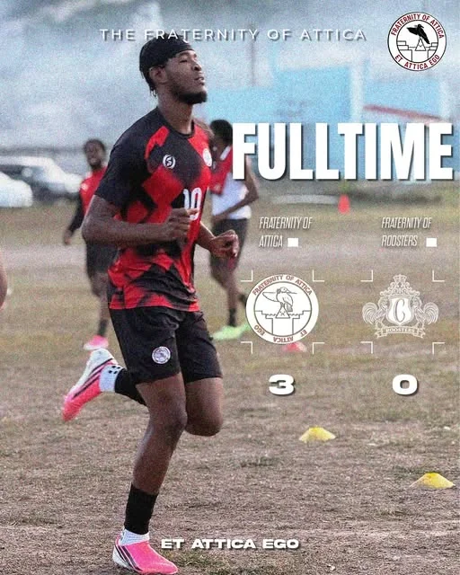

Block D, Mona
UWI’s Taylor Hall history records Block D as constructed and occupied by 1954. This is the building’s history; the fraternity’s founding date still needs confirmation.
WELCOME BACK, ATTICANS
The friendships, stories and possibilities don’t end when you leave Taylor Hall. Let’s keep them moving.
Reconnect with the fraternity ↗See what we can build together ↓ROOTED IN TAYLOR HALL
Attica is Block D at Taylor Hall, UWI Mona. This proposed alumni home brings the connection beyond the block: a place for old friends, shared memories and the next generation.
Explore Taylor Hall at UWI ↗UWI’s Taylor Hall history records Block D as constructed and occupied by 1954. This is the building’s history; the fraternity’s founding date still needs confirmation.
An archived UWI Block Week notice describes culture, cricket, a public forum and an invitation to past Atticans.
Read the UWI archive ↗The Jamaica Observer reported a 2–1 final win over Roosters in the UWI Guild Champions League.
Read the match report ↗FAMILIAR FACES. SHARED MOMENTS.
These images come from Attica’s public Instagram carousel and its shared Island’ Fusion post with Taylor Hall. Volleyball images are still previews from the activity clips.
A future alumni archive can bring together more generations and their memories.
A NEXT CHAPTER, TOGETHER
Ideas for the alumni group to shape.
These programmes are proposed, not yet launched.
A consent-based alumni network, organised by generation and interests, with members choosing what they share.
An archive of block memories, alumni journeys and the moments that deserve to be remembered.
Mentorship, practical advice and support for current students, shaped and approved by the fraternity.
The finished site can carry confirmed dates, venues and organiser details. No event dates or fundraising appeals have been invented for these concepts.
EVERY GENERATION ADDS SOMETHING
Maybe it’s a face in an old photograph. A name you haven’t heard in years. A match, a conversation, a whole chapter of your life.
A home for Attica can hold those memories—and make room for the friendships still to come.
Start reconnecting ↗For this concept, reconnect through Attica’s existing social channels. An alumni archive and member stories can follow with the group’s approval.
ONCE CONNECTED. STILL CONNECTED.
Start with the fraternity’s existing social channel.
Connect with Attica on Instagram ↗Official Hall links also connect to Attica’s account.
View Taylor Hall’s link directory ↗
Design 03 — The Connection. A welcoming, practical community hub: reconnect, preserve memories and give back.
Original Attica design concept. Crest: Attica’s public Instagram profile. Photos: Attica / Taylor Hall / Taylor Hall Sports, linked at each image. These are archived moments, not upcoming event notices. Confirm original artwork and media permissions before the official launch.
I like this direction →
LIFE BEYOND THE BLOCK
From the block,
with love.
The games. The culture. The people.
Explore the full account ↗A few moments from Attica’s Instagram.

INSTAGRAM ↗SPORT / 26 SEPTEMBER 2026
A moment worth keeping.
Attica’s shared match post records a 3–0 full-time result. A little piece of the block’s sporting story.
View the original post ↗CULTURE / 18 SEPTEMBER 2026
Showing up in our colours.
Taylor Hall’s shared Island’ Fusion post celebrates Attica’s third-place finish and the people who represented the block.
View the original post ↗ON THE COURT / 15 SEPTEMBER 2026
Team spirit, in motion.
A still preview from the volleyball activity clips in Attica’s public carousel. The shared moments are part of the story, too.
View the original post ↗Selected archived posts, with links to their original Instagram pages. This is a curated preview, not a live feed.